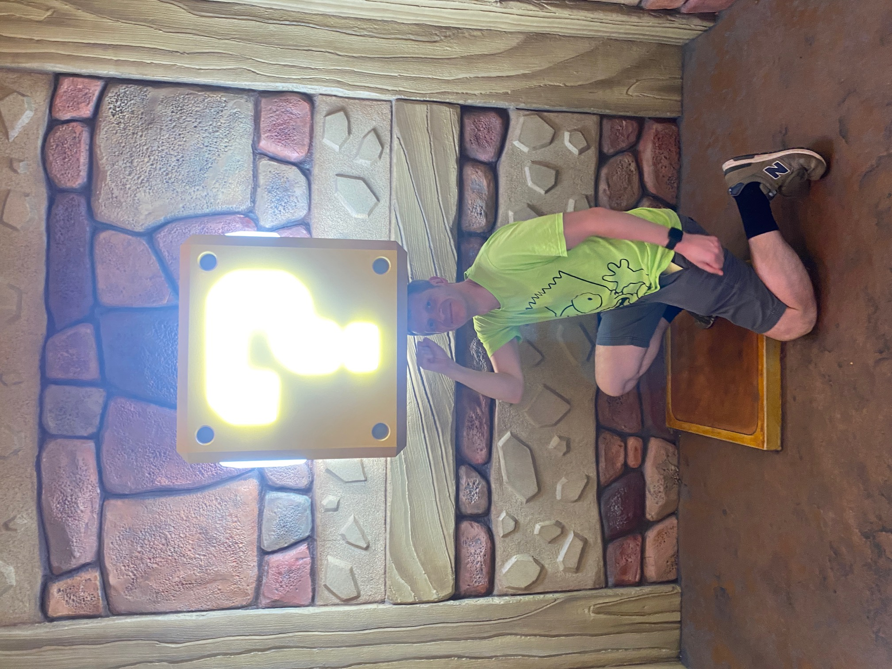

Our next scheduled fun was Universal Studios. Overall, less queueing and better than expected.
Universal is a bit closer so a relatively late 07:05 planned departure. Apart from missing a “turn left now” instruction at the entrance followed by a tricky U-turn in the tank, all was good and we were in the park soon after opening. But before that, we needed a security check. A guard moved the new arrivals to some newly-opened security channels in their usual purposeful way of instructing and demanding your movement, apart from he broke off to tell Freya that she looked lovely.
I had a fully researched plan based on weeks of research of queue times and the evolution throughout the day and the complex geography of the theme park. That all went out of the window when the big Harry Potter ride was showing as only 20 minutes. We joined the queue to realise that was an absolute lie. It was actually a 20 second wait.
We had previously described this as both the best and worst rides of our lives after our first trip to Orlando more than 10 years ago. I was left with pre-vomit sweats whilst squatting to reduce the risk of fainting after the first ride all those years ago.
No time to think this time as pretty much straight on. It was absolutely amazing, with a clever mix of coaster and visual effects, seamlessly melded together. It was Freya’s first time and Jake had no real memory from the first time. We all absolutely loved it. Now just the best ride ever. For now…
Flight of the Hippogriff was walk-on so we did that. It was like Chip and Dale yesterday, but with less good theming. I would be very disappointed if that was at the end of a 50-minute wait (like it was later in the day) but good for walk-on. The other 3 crazies re-rode the big Harry Potter ride while I wandered round Hogsmeade.
Freya then chose the Studio Tour as it had short queue. I had to step in at this point. I was mainly disappointed with myself for poor parenting. Choosing rides based on current early morning queue times is amateurish. You need to understand how these will develop over the day. I described Freya’s suggestion as a gratuitous waste of theme park time and Jake laughed at my vocabulary.
We went down 4 escalators to get to the Lower Lot, at my suggestion. We got some drinks and went for the Jurassic Park ride. Think Pirates of the Caribbean with high quality and scary dinosaur animatronics with a clever narrative. As Alison pointed out, the best effect was the most simple one: some rustling trees and a roar.
My faith in my parenting of Freya was restored as she somehow managed to swap seats with Alison at ride loading to put Alison in an outside seat. Freya was relatively dry but Alison was soaked. Proud Dad!
Next was a proper coaster, Revenge of the Mummy. It was a high quality dark coaster with a carriage like Smiler. The photo from the exciting start showed us as we are. Freya was looking like a nonplussed teenager, with a “whatever” look on her face. Me and Jake spotted the track and visuals pattern a second before launch so were smiling, looking eerily similar, in the photo a fraction of a second after the launch. Alison was caught mid-sentence asking what the start of the ride might be and then screaming as it happened. To complete the microcosm of the Ellis family, I’m too tight to have bought the ride photo to be able to share it with you!
Super Mario World came next, which was almost as spectacular as Galaxy’s Edge. It was like walking into the computer game with spinning coins, ? boxes to punch and a weirdly accurate Koopa Trooper walking around. Lots of smiling from us, even those who haven’t played the games. I needed a few minutes sat (in the shade) to process it all. It didn’t take long to process and decide not to join the 180-minute queue for the MarioKart ride.

Back to Upper Lot for the Studio Tour (still only a 10-minute queue while the Jurassic Park and Mummy queues had more than doubled in size - I felt vindicated for refusing the suggestion to ride this earlier). We filled up our drinks, joined the queue and was sat on a tram within 5 minutes. Spoiler Alert: Harry Potter’s “Best Ride Ever” crown was Truss-like in its leadership brevity.
The ride lasted an hour as you were driven through the actual lot, production sets, including where The Good Place and Back to the Future were filmed, and set-piece simulations. There was a water gush like Disney Paris but the two 360-degree 3D shows were spectacular, as was driving through sets from loads of films and TV series. It was most impressive as it is a live production studio.
We’d done most of the rides and so left for lunch. We’ll be back for night shows next week. We went to CityWalk for some fast food and shopping then back home for 2:30, ready for the pool, just like the first Orlando holiday. Apart from no heating of the pool. Brrr.
We spent the afternoon around the ranch, variously sat in the shade and inside depending on heat resistance and some splashing around the pool to cool down. Jake dared to jump off the diving board. Maybe more of us will do the same by the end of the holiday.
Tea was various combinations of salad, crisps and sandwiches while we looked for a nice movie to watch on Netflix. A League Of Their Own was chosen and was excellent. Tom Hanks is a genius.
We finally worked out the outdoor lights so sat outside by the pool with the funky evening party lights, chatting and planning our trip to Six Flags tomorrow. The plan is to turn up and see what we fancy. Apparently, there are 14 world-class thrill rides open now. Let’s see what and how much we can stomach.
I found a picture of Woody and Bullseye from Small World to demonstrate the questionable quality.